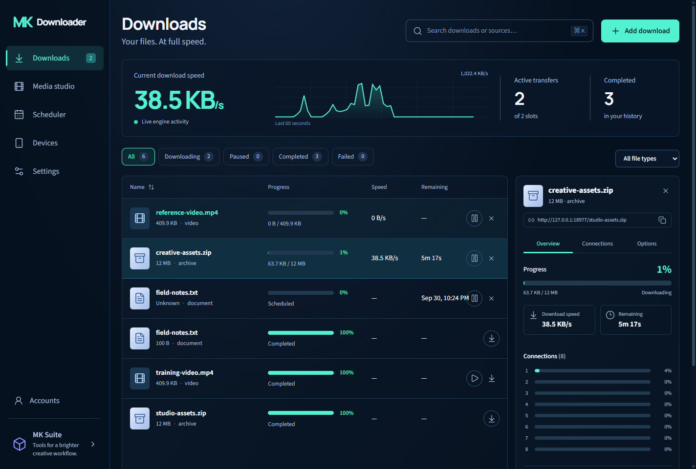
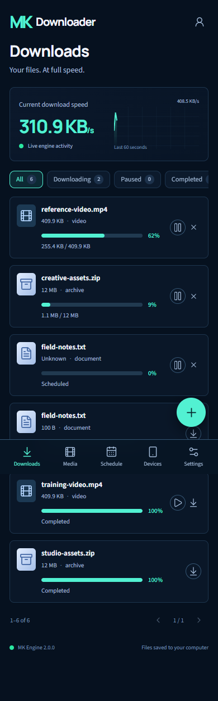
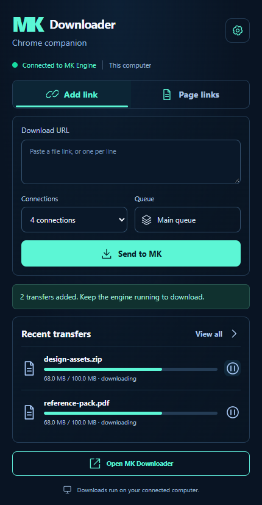

Parallel connections
Split supported files into multiple HTTP ranges. See exactly how each connection is progressing.
PART OF MK SUITE
A download workspace for your computer, browser, and phone.
More control. Reliable transfers. Built around your connection.

Split supported files into multiple HTTP ranges. See exactly how each connection is progressing.
Keep partial files, retry interrupted transfers, and recover your queue when the app reopens.
Send a link or select files from the current page. Pair once with your own download engine.
Add, pause, and resume your PC’s downloads from a paired phone on your private network.
Start a transfer at your desk. Check its progress from your phone.

Speed depends on your connection and the source server. Parallel transfers and resume work when the server supports them. Files download to your PC; use Save file to copy a completed download to your phone.
YOUR BROWSER, CONNECTED
Right-click a file link and choose Download with MK. Or open the extension, paste a URL, and choose the connections you want.
Session-bound links may still need the browser or Media studio. The extension does not collect your browser cookies.
Download Chrome extensionInstallation steps ↗
GET STARTED
Start the desktop app using your installer or the included launcher. The local web app opens at http://127.0.0.1:8976. Keep the PC awake while downloads or schedules run.
The project repository requires access. Use the supplied Windows installer to run version 2.0.
Unzip the extension. Open chrome://extensions, turn on Developer mode, choose Load unpacked, and select the extension folder. In its settings, use your engine address and the pairing key from Devices.
Open Devices on your PC. Visit its network address on your phone, then enter the pairing key. Use the same trusted Wi-Fi or your configured private network. Your phone’s localhost is not your PC.
Browser installation requires HTTPS or localhost. A normal phone browser tab works over your trusted LAN.
Use your PC address from Devices. This address stays in this browser.
SEE IT IN ACTION
A step-by-step walkthrough of the working app, extension setup, and phone layout.
Recorded against a controlled local transfer fixture. Device details are hidden for the public demo. Demonstrated throughput is not an internet speed benchmark.
No fixed speed increase is promised. More connections can help when a server and your connection allow it. MK uses a single stream when ranges are unavailable and verifies response lengths before publishing a completed file.
Media studio preserves MK Downloader’s existing link inspection, MP4 video, MP3 audio, quality selection, conversion, and local preview workflow. Some sources require your own browser session. Site restrictions and DRM remain in place.
Your files and download history stay on your PC. The website has no access to your engine. Your paired browser uses a local session; Chrome stores its pairing configuration on your device. Only share the pairing key with devices you trust.
No. The download engine must be running and the PC awake. Scheduled files start when their due time arrives and a queue slot is available.